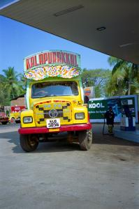
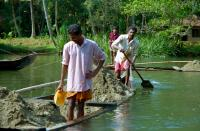
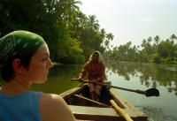
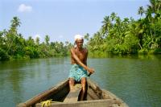
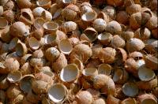
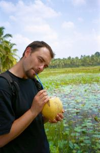

|
Samedi 10 mars
Ce qu'il y a de plus difficile à supporter en Inde, c'est le bruit permanent.
et c'est surtout du aux klaxons variés : camions, bus, rickshaws, voitures,
motos, scooters, vélos, vendeurs de glaces... Chacun a au moins un klaxon. Je
dis "au moins" car beaucoup en ont plein! Pour menacer, pour avertir, pour reculer,
pour impressionner, à une note, à 2 notes, à 3 notes et parfois, de véritables
morceaux de musique! La constante: le plus fort et le plus strident possible.
Mais en fait, c'est vital le klaxon. C'est grâce à lui que la circulation se
fait. Ca sert à dire: "gare, je passe", "je te double", "sache piéton que je
passe à 5 cm de toi, ne bouge pas", "je tourne", "bouge-toi, tu gênes", "degage,
c'est ma place", "file grosse vache (sacrée)", "moi d'abord", "je recule" ou
encore "salut" ... De toute facon ils klaxonnent à chaque coin de rues et 10
fois entre chaque carrefour, alors... Et on dirait qu'ils font exprès de klaxonner
chaque fois qu'ils se trouvent à côté de nos oreilles. Vu la circulation, ça
tape plutot sur les nerfs!
Experience à Fort Cochin. Nous sommes au Kerale, état à majorité catholique,
quelques musulmans quand même, quelques hindous et une vingtaine de juifs. Etat
communiste, paradoxalement très avancé sur bien des points: rues propres, scolarisation
gratuite pour tous, ce qui en fait l'état le plus scolarisé avec le moins d'analphabètes,
vie portuaire très active. villas cossues (et oui) de commerçants prospères,
nombreux magasins fermés et climatisés (pas uniquement des échoppes ouvertes
sur la rue). Bref, on se croirait presque en europe du sud! Ca, ajoute à la
moiteur qui fait coller mon pantalon à mes jambes (ce qui est presqu'aussi insupportable
que les klaxons), j'ai décidé de tenter le short! Résultat surprenant: tout
le monde éclate de rire à mon passage, hommes et femmes! Déroutant. J'étais
moyen a l'aise, il faut absolument que je trouve une robe.
Balade à Bazar Road et dans le quartier juif. Partout les odeurs d'épices
nous emplissent les narines, ca fait un peu tousser, mais qu'est-ce que c'est
parfumé ! Piments rouges sèchent par panières entières, noix de muscade, poivre,
mais aussi ail, oignons, noix de cajoux, une dizaine de variétés de riz différents,
tabac, bethel... Nous sommes dans la rue des ventes en gros et tout ça se vend
par sacs de jute d'environ 50 kg! Ici, on compte, là on évalue, la on charge,
là-bas on décharge le camion ou la charrette à bras, là on marchande, et là,
ici et là-bas, on glandouille!
Ce matin, superbe ballade en pirogue sur les backwaters, ces enchevetrements
d'etroits canaux creusés par l'homme, entre les lacs, la grosse rivière et la
mer. En plus du paysage, de la nature généreuse, des martin-pecheurs bleus voletant
devant nous, des nénuphars fleuris, des îles flottantes d'herbes racines dans
l'eau, nous avons beaucoup appris. Les backwaters ont été creusés par l'homme
qui récupère le sable, le charge sur sa pirogue et en fait des maisons et autres
constructions. C'est ainsi que la rivière d'une trentaine de mètres de large
est maintenant profonde de 10 mètres! Ici, les gens vivent de ça et de la pêche
(poisson, crabes, crevettes) et ils se déplacent en pirogue (on se croirait
dans le marais poitevin). On a appris à trouver: noix de muscade, café, cacao,
ananas, poivre, clou de girofle, noix de cajou, arbre pour faire les pirogues,
etc. Et surtout, à exploiter toutes les richesses de la noix de coco: cueillie
à 2 mois, on obtient plein d'eau de coco à boire. Cueillie à 4 mois, elle est
très très complète, il n'y a presque plus de lait de coco et par contre plein
de "meat", de chaire. On presse la chaire pour obtenir de l'huile qui sert à
cuisiner, masser, pour les cheveux, pour le peau. Les fibres qui restent sont
pour les vaches qui les mangent. La chaire est aussi utilisée "cakes" qui servent
d'appat pour la pêche. La coque séchée de la noix de coco est brulée. Son épaisse
enveloppe (verte/jaune) est filandreuse, elle est séchée ce qui donne des fibres,
passées dans une machine manuelle en bois pour en retirer les saletés et on
en fait des cordes en les liant à la main ou avec une étrange machine! Si on
veut des cordes hyper solides, il faut laisser les fibres tremper dans l'eau
5 à 6 mois avant de les tresser. Une autre partie encore sert d'engrais. Et
enfin, car rien ne se perd, si on abat un arbre, on utilise le bois ET les racines
(peu profonde, avec plein de petites racines)! La souche est mise dans l'eau
avec des appats (de coco!) sur un filet. On la laisse là quelques jours, le
temps que les crevettes et poissons y viennent, puis on remonte le tout dans
le filet et le tour est joué! Nous voila transformés en vrais Robinsons Crusoé,
on peut retourner à Goa! Entre nous l'eau de coco, j'aime pas vraiment mais
bon faut pas vexer alors j'ai essayé de boire toute ma noix mais il y a au moins
un litre la-dedans!
Dimanche 11 mars
On a hesité à partir ce matin pour Quillon. Le trajet se fait par bateau et
par bus. Mais il faut se lever a 7h00 et on n'est pas complètement remis de
notre dur voyage en train. Après tout, on a le temps, on est en Inde pour 2,5
mois et en vacances pour presqu'un an. Bref, aujourd'hui, on glande pas mal
à Cochin vu qu'il n'y a pas grand chose à faire, surtout le dimanche ou tout
est fermé. J'ai l'impression que la glande n'est pas finie, on vient d'apprendre
que demain, une grève générale va paralyser le pays. Du coup, pas question de
partir... Ce soir, on a vu le coucher de soleil dans les filets chinois, ces
savantes machines qui servent à remonter des filets tendus sur des mats en bois.
On n'était pas seuls. C'est le week-end, la plage est remplie d'indiens, de
familles, de bandes de jeunes, de couples d'amoureux. Et partout les vendeurs
de glaces et leurs clochettes qui jouent leur musique monotone. Hier soir en
plus, on a vu des dauphins à quelques dizaines de mètres de la plage... Peut-être
que eux aussi ils venaient voir le coucher de soleil. A moins qu'ils ne suivaient
les bateaux des pêcheurs. Y'en a qui ne pensent qu'à manger! Au fait, Marion,
qu'est-ce qu'on mange ce soir?
Lundi 12 mars, grève à Cochin
Difficile d'imaginer qu'on est en Inde. Déjà que l'ambiance dans le Kerala
est plus détendue que dans le nord, mais là quand même... Pas un bus. Pas une
voiture. A peine quelques motos de temps en temps. On peut se balader au milieu
de la rue sans crainte d'être applati par un bus, c'est peu courant... Personne
non plus pour nous interpeller, pour nous vendre un truc. Les magasins sont
fermés. Seuls un ou deux restos sont ouverts, histoire de ne pas laisser les
touristes mourir de faim. Bref, personne ne travaille, la grève semble être
suivie par vraiment tout le monde. Faut dire qu'ils ont de l'entraînement, il
parait que c'est assez régulier. Et puis cela a commencé il y a pas mal de temps,
avec Gandhi qui paralysait le pays par de grands mouvements pour gagner l'indépendance
de l'Inde. La grève, cela doit être culturel ici. Celle d'aujourd'hui, c'est
pour des raisons liées au vote du budget, on n'a pas tout compris. Ce soir,
on dort a Allepey qu'on a rejoint par bus, la grève s'est terminée comme prévu
à 18h00.
Suite du voyage : Allepey - Quillon, Les backwaters
|

Inde
Cochin
|

Inde
Cochin
|

Inde
Cochin
|

Inde
Cochin
|

Inde
Cochin
|

Inde
Cochin
|
|
|